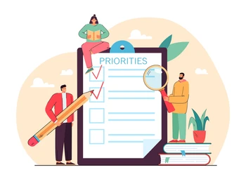
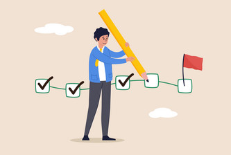

BLOGS

Time Management Techniques
Effective time management methodologies ensure optimized productivity and goal attainment.

Task Prioritization
Strategic task prioritization fosters focus on critical objectives, enhancing productivity and decision-making.
Focus and Concentration
Maintaining unwavering focus amid distractions cultivates efficiency and fosters deep, meaningful work.

Goal Setting and Tracking
SMART goal setting coupled with consistent progress tracking fuels motivation and ensures steady advancement.